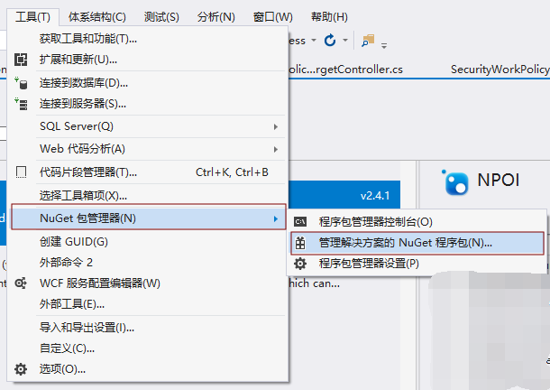
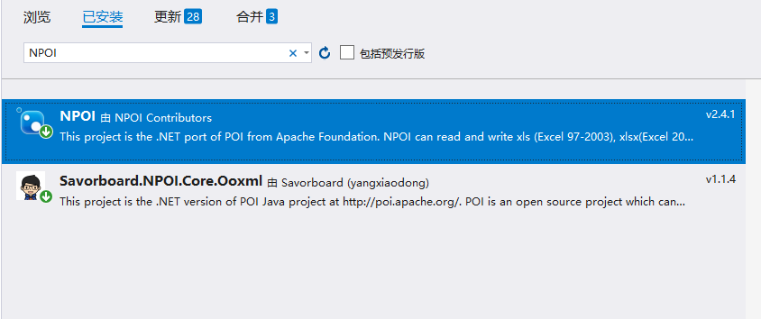

因为之前没有接触NPOI过这个插件，所以几乎都是自己一边百度摸索一边学习。
这个插件对于Excel的数据导入和导出，可以说是很方便了，
但是对于导出word文档，可以说是很少的，百度了很多....也不停止地去试代码，于是整理出自己的一些看法，方便记录代码。
话不多说，上代码...
用这个插件你需要准备：


前端代码：相对来说，知道怎么写ajax就行
$.ajax({
type: "POST",
url: "@Url.Action("SaveWordFile")?id=" + id,
data: JSON,
success: function (data) {
console.log("返回的信息：" + data);
if (data != "false") {
alert("生成文件成功！");
window.location.href = data;//数据的文件路径
} else {
alert("生成文件失败！");
}
},
error: function () {
alert("文件生成错误！");
}
});
重要的是后端代码：
//导出Work
#region 生成word
/// <summary>
/// 生成word文档,并保存静态资源文件夹（wwwroot)下的SaveWordFile文件夹中
/// </summary>
/// <param name="savePath">保存路径</param>
public async Task<string> SaveWordFile(string savePath, string id)
{
//根据id查到此条选中的信息
var Date_SecurityWorkPolicyTarget = await _context.SecurityWorkPolicyTarget.FirstOrDefaultAsync(m => m.Id == id);
savePath = "";
try
{
string currentDate = DateTime.Now.ToString("yyyyMMdd");
//保存文件到静态资源wwwroot,使用绝对路径路径
var uploadPath = _environment.WebRootPath + "/SaveWordFile/" + currentDate + "/";//>>>相当于HttpContext.Current.Server.MapPath("")
//拼接文件标题：自己拼接所需要的数据即可
string workFileName = Date_SecurityWorkPolicyTarget.SubordinateCompany + "文件";
string fileName = string.Format("{0}.docx", workFileName, System.Text.Encoding.UTF8);
if (!Directory.Exists(uploadPath))
{
Directory.CreateDirectory(uploadPath);
}
//通过使用文件流，创建文件流对象，向文件流中写入内容，并保存为Word文档格式
using (var stream = new FileStream(Path.Combine(uploadPath, fileName), FileMode.Create, FileAccess.Write))
{
//创建document文档对象对象实例
XWPFDocument document = new XWPFDocument();
/**
*这里通过设置公共的Word文档中SetParagraph（段落）实例创建和段落样式格式设置，大大减少了代码的冗余，
* 避免每使用一个段落而去创建一次段落实例和设置段落的基本样式
*(如下，ParagraphInstanceSetting为段落实例创建和样式设置，后面索引表示为当前是第几行段落,索引从0开始)
*/
//文本标题
document.SetParagraph(ParagraphInstanceSetting(document, workFileName, true, 28, "宋体", "#ff0000", UnderlinePatterns.None, ParagraphAlignment.CENTER), 0);
//TODO:这里一行需要显示两个文本
//document.SetParagraph(ParagraphInstanceSetting(document, $"【发文号】", false, 14, "宋体", ParagraphAlignment.CENTER, true, $" 检查时间：{checkTime}"), 1);
//这里一行显示一个文本，也可以填入需要填充数据的变量
document.SetParagraph(ParagraphInstanceSetting(document, Date_SecurityWorkPolicyTarget.DocumentNumber, false, 14, "宋体", "", UnderlinePatterns.None, ParagraphAlignment.CENTER), 1);
//向文档流中写入内容，生成word(简称文件输入流)
document.Write(stream);
savePath = "/SaveWordFile/" + currentDate + "/" + fileName;//生成文件到自己需要保存的路径：自己拼接路径即可
//将路径返回给前台
return savePath;
}
catch (Exception ex)
{
//ignore
savePath = ex.Message;
return "false";
}
}word文档的基本样式设置：
这是基本的样式参数，按着自己需要的来用就行...如果有些没有的话，建议百度一下，我只查了我用到的
/// <summary>
/// 创建word文档中的段落对象和设置段落文本的基本样式（字体大小，字体，字体颜色，字体对齐位置）
/// </summary>
/// <param name="document">document文档对象</param>
/// <param name="fillContent">段落第一个文本对象填充的内容</param>
/// <param name="isBold">是否加粗</param>
/// <param name="fontSize">字体大小</param>
/// <param name="fontFamily">字体</param>
/// <param name="paragraphAlign">段落排列（左对齐，居中，右对齐）</param>
/// <param name="isStatement">是否在同一段落创建第二个文本对象（解决同一段落里面需要填充两个或者多个文本值的情况，多个文本需要自己拓展，现在最多支持两个）</param>
/// <param name="secondFillContent">第二次声明的文本对象填充的内容，样式与第一次的一致</param>
/// <returns></returns>
private static XWPFParagraph ParagraphInstanceSetting(XWPFDocument document, string fillContent, bool isBold, int fontSize, string fontFamily, string rgbStr, UnderlinePatterns value, ParagraphAlignment paragraphAlign, bool isStatement = false, string secondFillContent = "")
{
XWPFParagraph paragraph = document.CreateParagraph();//创建段落对象
paragraph.Alignment = paragraphAlign;//文字显示位置,段落排列（左对齐，居中，右对齐）
XWPFRun xwpfRun = paragraph.CreateRun();//创建段落文本对象
xwpfRun.IsBold = isBold;//文字加粗
xwpfRun.SetText(fillContent);//填充内容
xwpfRun.FontSize = fontSize;//设置文字大小
xwpfRun.SetFontFamily(fontFamily, FontCharRange.None); //设置标题样式如：（微软雅黑，隶书，楷体）根据自己的需求而定
xwpfRun.SetColor(rgbStr);//设置字体颜色--十六进制
xwpfRun.SetUnderline(value);//设置下划线，枚举类型
//第二个文本的样式
if (isStatement)
{
XWPFRun secondxwpfRun = paragraph.CreateRun();//创建段落文本对象
secondxwpfRun.IsBold = isBold;//文字加粗
secondxwpfRun.SetText(secondFillContent);//填充内容
secondxwpfRun.FontSize = fontSize;//设置文字大小
secondxwpfRun.SetFontFamily(fontFamily, FontCharRange.None); //设置标题样式如：（微软雅黑，隶书，楷体）根据自己的需求而定
}
return paragraph;
}最后导出的word文档效果就是：
我主要的都是段落，一行一行的排版，所以效果就是这样.....
关于word排版的建议：例如领导说需要一些换行啊....等等之类的
建议在存储数据的时候就已经将分行排版好，这样可以在后台对数据进行操作之后再导出，这样导出来的即就是你需要的换行格式.....
换行符转换是个很好用的东西
string[] strArr_FG = Date_SecurityWorkPolicyTarget.Filecontent.Split("\r\n");//根据xx分隔字符串这样就会得到根据换行符分好的数组....
接下来的操作就是看业务跟需求了...
总结：从接触这个插件我大改花了两天时间去做这个代码需求，其实插件都是知道怎么用就行，没有很深入的去研究，但是学到一些新的代码也是种进步，积累不是一朝一夕，罗马不是一天建成的，可毕竟条条大道通罗马，坚持学习就是最好的。
还有一些是需要word表格格式的，这里就不一 一贴代码了，
献上我参考代码的链接，我觉得作者写的很好。
https://www.cnblogs.com/Can-daydayup/p/11588531.html#_label1